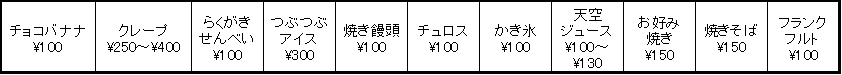

販売物
模擬店

翠巒祭の名物の一つでもある、小腹を満たすおやつからがっつり食べられるメニューまで多種多様な模擬店。
今年はさらにパワーアップして来場してくださるお客様に安全で安心、そして何よりもおいしい商品を安く提供します！
メニュー
<商品がパワーアップ！>
現在、大小９種類の模擬店がありますが
今年は新商品として昨年、第６１回翠巒祭で数量限定販売し即完売してしまった幻の大人気商品
カラフルでかわいい、不思議な見た目のつぶつぶアイスこと『ディッピンドッツ』を正式販売します！
昨年、お買い求められなかったお客様にも十分な数量を用意してお待ちしております。
是非とも新食感でおいしい不思議なつぶつぶアイスをご賞味あれ！
他にも、つぶつぶアイスだけでなく クレープにも新メニュー追加、ジュースも昨年とは商品が変わります！
|
このWebをご覧になっているお客様にだけお得情報！ お昼頃になると商品が売り切れてしまい、ご希望の商品が提供できない場合があります。 ほんの少しだけでもお昼頃より早くご来場頂けると模擬店もあまり並ばずにご購入でき、翠巒祭もゆっくり回れるのでオススメです！ |
<調理方法がパワーアップ！>
翠巒祭では高高生が調理し、商品を提供する模擬店ですが、
中には「衛生的に大丈夫なの…？」とご心配なさるお客様もいらっしゃるかもしれません。
高崎高校では売り場を担当する生徒達全員に入念な衛生指導を行い、当日では食中毒防止のための１時間に１回の食品検査が義務づけられ、商品によっては指定の過熱時間を必ず守っています。
お客様に商品としてお出しする以上、細心の注意を払って調理しています。
そして作り方も安全性は勿論のこと、業者の方と話し合って美味しさを追求したものにしています。
安全で美味しいものを提供するために励んでいます。
翠巒祭にご来場してくださるお客様は、是非とも模擬店の商品でお腹を満たしつつ第６２回翠巒祭を楽しんでください！
宜しくお願いします。